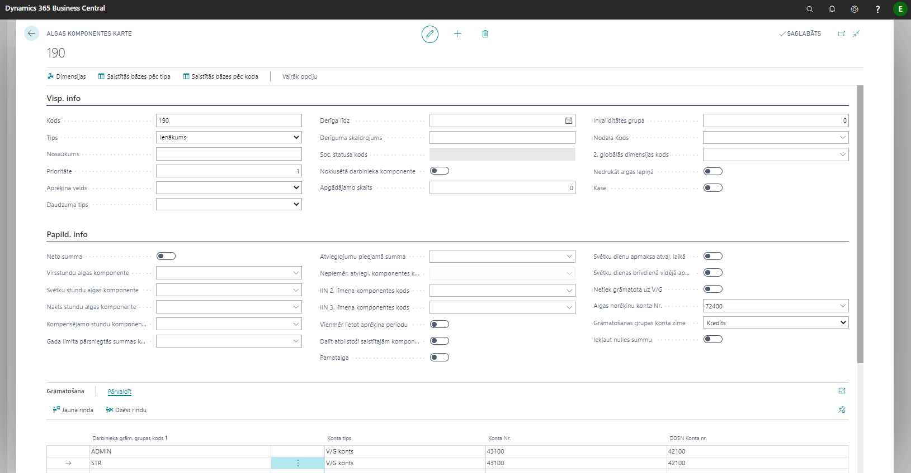

Prombūtnes
Visas nobīdes no plānotā darba laika jāievada atsevišķā kartiņā. Visas prombūtņu kartiņas tiek apkopotas Darbinieku prombūtnes reģistrācijas žurnālā.
Jaunas prombūtnes ievadīšana
Lai ievadītu jaunu prombūtni, ir jādodas uz reģistru Darbinieku prombūtnes un jāizveido jauna Darbinieka prombūtnes karte klikšķinot uz pogas Jauns.
Darbinieka prombūtnei iespējams definēt Dimensijas klikšķinot uz  .
.
Izvēloties Darbinieka Nr. ir iespējams apskatīt izvēlētā darbinieka detalizāciju  , lai ērti apskatītu, piemēram, iepriekšējo prombūtņu ierakstus vai iepriekšējo periodu algas datus.
, lai ērti apskatītu, piemēram, iepriekšējo prombūtņu ierakstus vai iepriekšējo periodu algas datus.
Ja darbiniekam ir ievadīta saistīta prombūtne un datumi pārklājas, tad ir iespēja veikt pārrēķinu, klikšķinot uz  . Pārrēķinu ierakstiem pēc noklusējuma tiek norādīts nākamais mēnesis, par kuru nav izveidots algu saraksts.
. Pārrēķinu ierakstiem pēc noklusējuma tiek norādīts nākamais mēnesis, par kuru nav izveidots algu saraksts.
Vidējās izpeļņas buferī var apskatīt iepriekšējo mēnešu datus par vidējās izpeļņas apmēriem 
Zem rīkjoslas pogas Naviģēt  ir pieejamas funkcijas Atcelt prombūtni
ir pieejamas funkcijas Atcelt prombūtni  un Atcelt pārrēķinu
un Atcelt pārrēķinu  prombūtnei. Pārrēķināt funkciju izmanto gadījumā, ja reģistrētās prombūtnes laikā tika reģistrētas darba stundas. Pārrēķinu var atcelt ar . Visos pārējos gadījumos tiek izmantota funkcija Atcelt prombūtni .
prombūtnei. Pārrēķināt funkciju izmanto gadījumā, ja reģistrētās prombūtnes laikā tika reģistrētas darba stundas. Pārrēķinu var atcelt ar . Visos pārējos gadījumos tiek izmantota funkcija Atcelt prombūtni .
Tip
Atceļot prombūtni, sistēma neveic darba algas pārrēķinu. Gadījumā, ja ir nepieciešams nokoriģēt nostrādāto dienu skaitu šajā periodā, jāveic storno tajā pašā mēnesī.
| Lauka nosaukums | Apraksts |
|---|---|
| Darbinieka Nr | No saraksta izvēlēts darbinieks, kam reģistrējama prombūtne. |
| Neierašanās iemesla kods | No saraksta izvēlēts kods. |
| No datuma | Datums, no kura ir spēkā prombūtne. |
| Līdz datumam | Datums, līdz kuram ir spēkā prombūtne. |
| Apraksts | Neierašanās iemesla koda nosaukums, sistēmas ģenerēts lauks. |
| Neattaisnota prombūtne | Atzīme, ka prombūtne ir neattaisnota un samaksa nav jāaprēķina. |
| Algas aprēķina veids | Uzstādījumi no prombūtņu saraksta, sistēmas ģenerēts lauks. |
| Aprēķina gads | Sistēma ievada automātiski, vadoties pēc prombūtnes datuma. Rediģējams lauks. |
| Aprēķina mēnesis | Sistēma ievada automātiski, vadoties pēc prombūtnes datuma. Rediģējams lauks. |
| Dienas | Sistēma ievada automātiski, vadoties pēc darbiniekam piešķirtā kalendāra. |
| Stundas | Sistēma ievada automātiski, vadoties pēc darbiniekam piešķirtā kalendāra. |
| Izlaist starpizmaksās | Ja ieslēgts, tad aprēķinātā prombūtnes samaksa netiks izmaksāta starpizmaksās. |
| Saistītā dokumenta rinda | Sistēma norāda automātiski, ja ierakstam pastāv saistīts dokuments. |
| Saistītais dokuments | Sistēma norāda automātiski - tad, kad tiek veikts aprēķins par prombūtni. |
| 1. globālās dimensijas kods | Norāda globālo dimensiju ja nepieciešams. |
| 2. globālās dimensijas kods | Norāda globālo dimensiju ja nepieciešams. |
| Turpinājums no | Funkcija prombūtņu sasaistīšanai. Ja darbiniekam ievadīta virkne prombūtnes, kurām jābūt aprēķinātām ar vienādu vidējo izpeļņu, tad šajā laukā jānorāda iepriekšējā prombūtne. |
| Saglabāt algu ar vidējo izpeļņu | Ieslēdz, ja vēlas prombūtnes laikā darbiniekam saglabāt algu ar vidējo izpeļņu. |
| Dienas vidējā izpeļņa | Ja nepieciešams mainīt dienas vidējo izpeļņu, to pirms aprēķina manuāli ievada laukā. |
| Stundas vidējā izpeļņa | Ja nepieciešams mainīt stundas vidējo izpeļņu, to pirms aprēķina manuāli ievada laukā. |
| Vidējā izpeļņa mainīta | Sistēma ieslēdz automātiski, ja ierakstītas vērtības dienas vai stundas vidējās izpeļņas lauciņos. |
Atvaļinājums
Atvaļinājuma atlikumu var pārbaudīt darbinieka kartiņā nospiežot pogu Uzkrātās atvaļinājuma dienas ().
Koriģēt atvaļinājuma dienu atlikumu var caur lauku Uzkr.(-) / Izņ.(+) atvaļ. dienas ().
Atvaļinājuma uzkrājums
Atverot atskaiti Uzkrātais atvaļinājums un atskaites drukas logā izvēloties brīvi izvēlētu datumu (), var aprēķināt darbinieku neizmantotās atvaļinājuma dienas, kā arī to izmaksas, ņemot vērā darbinieku vidējo dienas izpeļņu un darba devēja sociālā nodokļa izmaksas. Kā arī, var nosūtīt () uz virsgrāmatas žurnālu () atvaļinājuma uzkrājumu summas () grāmatojumus. Uzkrājuma komponentes kodā () jānorāda algas komponentes kods, kurā norādīti visi grāmatojumu uzstādījumi. Ieteicams izveidot komponenti, kura netiks izmantota algu aprēķinos. Komponentes kartiņas Nr. 190 piemēru skatiet zemāk

Palaižot atskaiti, norādītājā virsgrāmatas žurnālā tiks izveidoti grāmatojumi:
- Atvaļinājumu uzkrājumu grāmatojumi uz atskaitē norādīto datumu.
- Atvaļinājumu uzkrājumu grāmatojumi ar mīnus zīmi ar nākama mēneša pēdējo datumu.
Gadījumā, ja nepieciešams veidot atvaļinājumu uzkrājumus pa dimensijām, atskaites parametros nepieciešams noradīt atbilstošas dimensijas.
Slimības lapa
No darbiniekiem saņemtās slimības lapas reģistrē Darbinieku prombūtnes reģistrā.
Slimības lapas apmaksu uzstādījumi ir ietverti attiecīgajās prombūtnes iemeslu kodu kartiņās. Prombūtnes iemesla kartes funkcionālo lauku apraksts ir detalizēti izklāstīts nodaļā Prombūtnes iemesli.
Ja pārejoša slimības lapa tiek iesniegta pēc algu aprēķina (algu aprēķins izmaksāts vai iegrāmatots), tad aprēķinu ir ieteicams veikt slimības lapas beigu mēnesī.
Prombūtņu analītika
Neierašanos reģistrācija sarakstā ir apkopoti visi darbinieku prombūtņu dati.
Ērtākai prombūtņu datu iegūšanai, iesakām sarakstā izmantot filtrus. Ērtākai datu apstrādei iesakām atlasīto informāciju atvērt Excel vidē klikšķinot rīkjoslā uz pogas Atvērt programmā Excel.